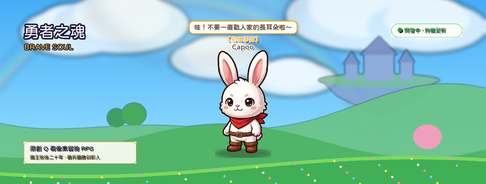

今日村莊 · 每日委託
已上線每天打開就有事做。委託導向狩獵與演武——回村才變強。

「『動起來吧，小傢伙，去看看這個停下來的世界。』當世界大鐘停擺，背負十五圈發條的白兔握緊了齒輪刃。」
《發條之心》（Clockwork Heart）創想界域物語。
Sky Kingdom
拒絕封閉暗沉的泥土地圖！開闊通透的湛藍晴空、浮空城堡、彩虹微光與翠綠花海平台，主角小白具備活化動態與台詞對話氣泡。
看小白晃動毛茸茸長耳朵與眨眼待機！點擊戳碰即時觸發趣味台詞對話氣泡與彩糖星芒爆散。大廳遵循現代手遊人體工學，底部一級入口與大廳卡片絕無重複，清爽直覺。
Realm of Wonder
2.2 頭身毛絨發條白兔「小白」，長耳共鳴感應弱點部位。弱小玩具也能迎戰龐大數十倍的機關泰坦。
 序章 · 晨光工坊
序章 · 晨光工坊
拾起齒輪兵刃向外探索。浮空島有四大殿堂：鐵匠鋪、聚魂殿、手藝工坊、武術館。走進才算來過。

Moments
旅途裡最常記住的三個瞬間——聖獸試煉、聚魂殿點亮、鐵匠爐邊。
 Battle
Battle
 Soul
Soul
 Forge
Forge
Explore
騎士堡、霧隱、道場、森林、海岸、法師之塔——岔路自訂順序，Boss 依戰力挑戰。
Moments

小白長耳感知共鳴破綻。壓到七成血出現第一道裂縫，四成零件崩解。部位破壞削弱強攻、奪取核心組件。
點亮五色葫蘆凝聚十四主星，虔誠累積凝魂入槽。怒氣打滿自動暴怒進入極限運轉。技能手感因武器而異。
鐵匠工坊鍛造升階不爆裝、聚魂殿點亮星盤、手藝工坊精鑄飾品、武術館研習招式。走進才算來過。
Integration
不是丟掉重做。村莊日常、演武、野外材料、抽魂，對應到今日村莊與四店；FB 社交變成可選的旅人痕跡與好友殘影。
每天打開就有事做。委託導向狩獵與演武——回村才變強。
點哪走哪、點誰互動、點對話推進。雜魚當場結算，Boss 才進戰鬥畫面。滑鼠與觸控同一套。
五波天梯、挑戰狀、每場抽獎、敲鑼換對手。換日發獎，不是即時 PVP。
刷材料、薄經驗。演武同一隻約兩倍。刷太久會被提醒回村。
鐵匠鋪、聚魂殿、手藝工坊、武術館都能走進去。抽魂＝聚魂。
抽魂積虔誠，滿百得碎片、碎片凝魂。廢魂一鍵吸收餵養，最高 10 級。
留言石、通關燭火、排行。Google／Discord／Facebook／X 可選登入。
打對方留下的打法。勝選金或經驗，3 鑰開友誼寶箱。
適合誰玩
喜愛《發條之心》奇想冒險 愛武器搭配與頭目戰 想單機也能通關 偶爾想看到其他旅人Footage
左右滑動瀏覽；點進圖庫看完整集。